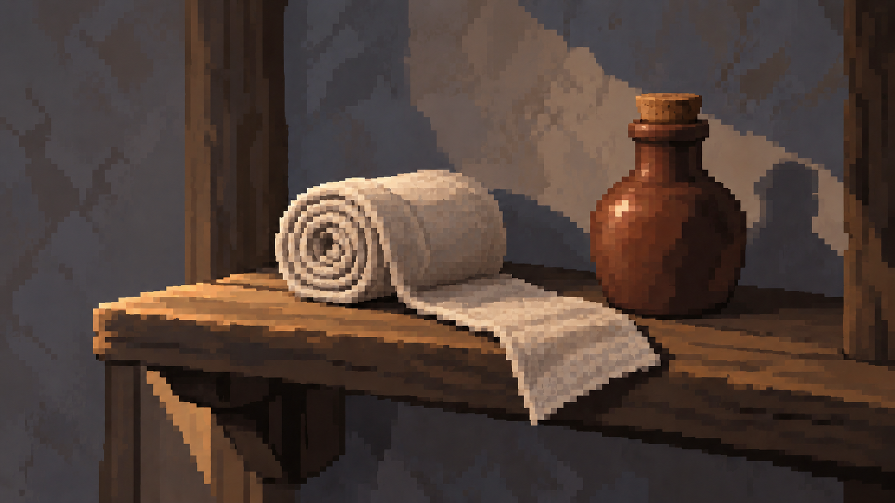
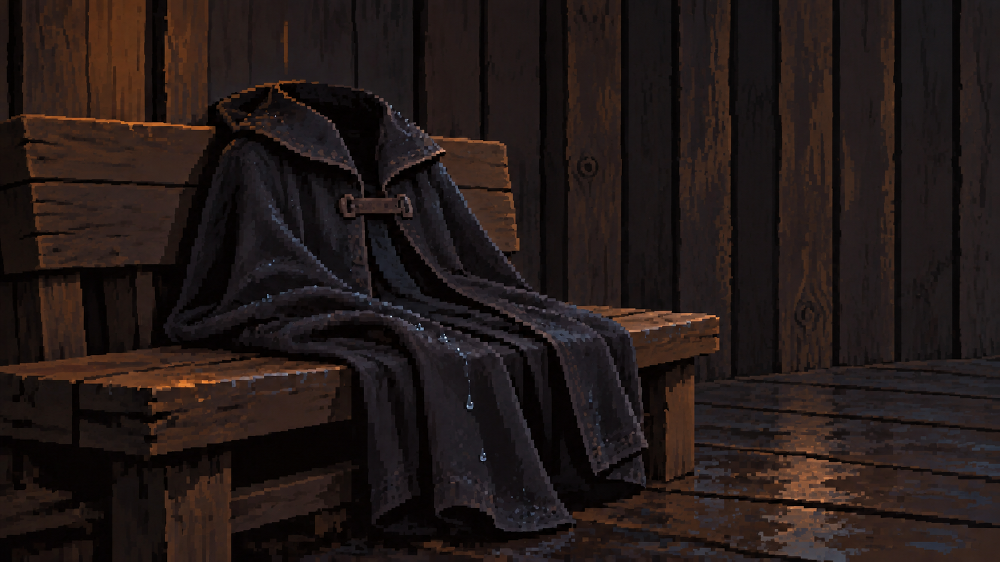
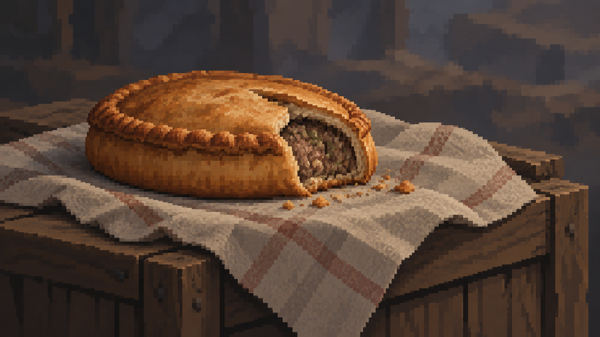
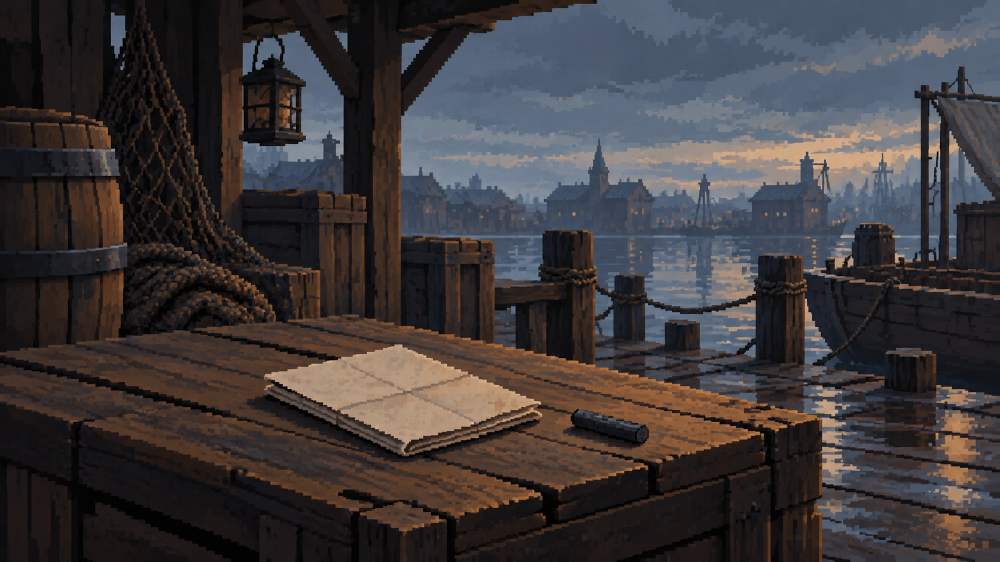
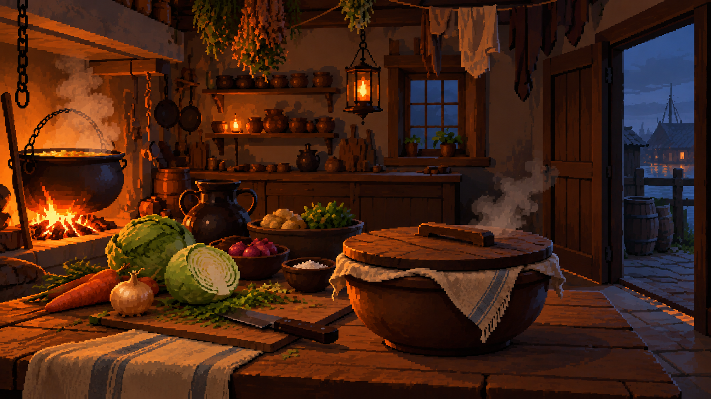

Быт и город
05.10.2026 · 22 основных кадров · к игре пока не подключены. Нажми картинку для оригинала.
Основные хлеб и ночлег под открытым небом подходят любому району. Причальные версии — только для доков. Пирог на прилавке — покупка на рынке; для еды из карманов есть нейтральный кадр в разделе «Предметы». Новые комнаты — предложения для просмотра.
Предметы

Бинт и настой
Основной предметный кадр без гавани и привязки к району.
Просмоленный плащ
Основной предметный кадр без гавани и привязки к району.
Пирог с собой — нейтральный кадр
Для предмета в карманах и употребления в любом районе; рыночный кадр остаётся для покупки.Дела

Письмо грузчика родным
Дело napisat_za_nego: причал грузчиков, сухая доска и уголь, без пера.
Миска горячего для передачиДополнительные варианты для доков